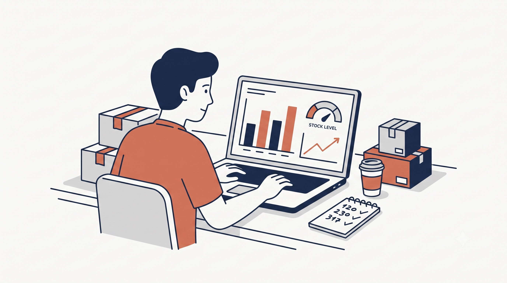

Ayudo a tiendas online a entender qué se vende, qué stock se queda parado y cómo prever ventas, sin depender de Excels manuales.
Escríbeme →
Tienes ventas, tienes stock, tienes facturas — pero todo está en sitios distintos. Cuando quieres decidir si pedir más de un producto o dejar de vender otro, lo haces por intuición, porque montar el informe te llevaría un día entero.
Reviso cómo gestionas hoy tus datos de ventas, productos y stock. Identifico dónde está la información, qué se puede cruzar y qué decisiones estás tomando a ciegas.
Con eso construyo un diagnóstico claro: qué KPIs deberías estar mirando, cuáles no te dicen nada útil, y cuál debería ser tu siguiente paso concreto.
Sin dashboards innecesarios. Sin tecnología por encima de lo que tu negocio necesita ahora mismo.
Después de trabajar juntos sabes exactamente qué productos reponer y cuándo, cuáles dejar de pedir, y qué categoría sostiene realmente tu negocio.
Tus decisiones de stock, compras y catálogo dejan de depender de la intuición — y empiezan a depender de lo que tus propios datos llevan tiempo intentando decirte.
Catálogo de más de 3.000 productos, varios canales de venta, años de histórico sin analizar. Resultado: tendencia de crecimiento del 82% identificada, catálogo clasificado en 4 grupos según comportamiento real, previsión de ventas semanal con ~97% de precisión.
(Caso elaborado con datos públicos de retail, adaptado a escenario de e-commerce. No corresponde a un cliente real.)
Si esto te suena familiar, escríbeme. Cuéntame cómo gestionas hoy tus datos de ventas y stock, y te digo en 24 horas si tiene sentido que hablemos.